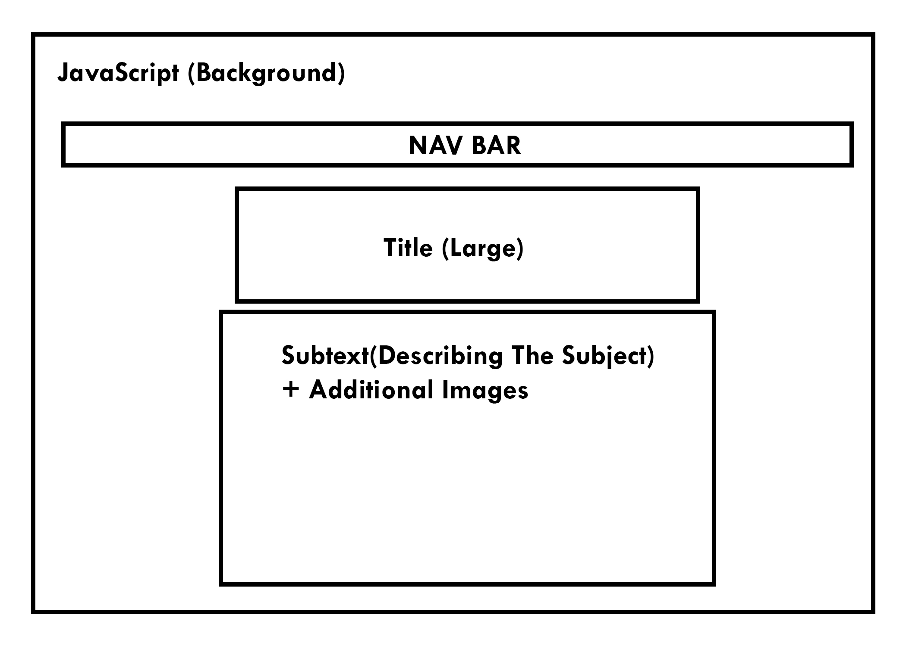

Below is my outline / plannned layout for the new project.
Above are the links to two features I want to experiment with in Javascript. I used p5 for this assignment and am planning to use this primarily for my project as well. I plan to put all the div elements with text and additional images in a transparent background while I use a dynamic div background behind the text.
